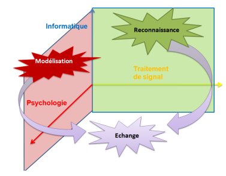

Problématiques et objectifs
A l'heure actuelle, il n'existe pas de modèle générique pour échanger les émotions
entre applications différentes. Les modèles des émotions développés en informatique
sont très divers en termes de conception et de fonctionnement. L'utilité de ces modèles
est limité par les applications spécifiques car ils sont créés pour répondre à un
contexte d'interactions prédéfini. Ainsi, plusieurs questions scientifques se posent
et ouvrent sur les problématiques suivantes:
- Comment modéliser les émotions en tenant compte de leur complexité ?
- Comment effectuer l'échange émotionnel lors d'une interaction homme-machine ou machine-machine ?
- Comment modéliser les émotions en informatique en se basant sur les différentes approches des émotions en psychologie ?
Mon travail de thèse s'inscrit dans le cadre de la modélisation informatique des émotions
qui est une thématique reconnue dans le domaine de l'intelligence artifcielle.
L'objectif principal de mon travail est d'essayer d'apporter des éléments de réponse
relatifs aux différentes problématiques citées ci dessus et de contribuer à l'amélioration
de l'interaction homme-machine. Notre but est de pouvoir identifier, décrire
et échanger les qualités sémantiques des émotions issues des modalités multiples
(parole, expression faciale, geste, etc.) lors d'une interaction homme-machine ou
machine-machine.
Les principaux objectifs que nous nous sommes fixés sont les suivants :

- modélisation des émotions en tenant compte de leur richesse et de leur complexité
- proposer un algorithme de détection des émotions en se basant sur notre modèle de représentation des émotions et sur les outils fournis par le domaine du
traitement de signal.
- proposer un système d'échange émotionnel complet permettant le partage
aussi bien des émotions primaires que des émotions mixtes ou mélangés